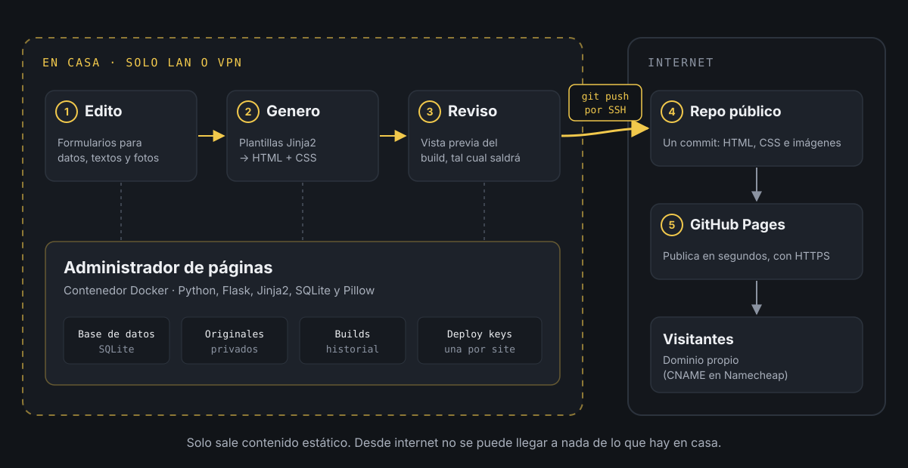

Un CMS que nunca sale de casa.
Llevo años coleccionando ediciones de El Hobbit en distintos idiomas, y hasta hace poco la web de la colección vivía en un Google Site. Funcionaba, pero era muy poco versátil. Cada vez que llegaba un libro nuevo tocaba duplicar bloques, subir fotos, ajustar textos a mano y rezar para que nada se descolocara. Para algo que quiero mantener al día, era demasiado trabajo manual.
El dilema
La alternativa lógica era montar un CMS. El problema es que eso implica tener un servidor publicado en internet, y yo no quería abrir mi servidor de casa al exterior. Además, siendo sinceros, no necesitaba nada complejo: una web con un listado, unas fichas y unas cuantas páginas. Luego me vine arriba y fui añadiendo un montón de funcionalidades que se me iban ocurriendo, pero todas mantienen la misma base: todo simple en destino, aunque se complique en el backend local.
También me echaba para atrás el goteo constante de vulnerabilidades en los CMS más conocidos y en cualquier solución con un backend público. Un plugin sin actualizar, un panel de administración expuesto, y ya tienes un problema. Para una web personal no me compensaba estar pendiente de parches.
El término medio
Así que me hice algo a medida, a medio camino entre las dos cosas: un administrador de páginas propio.
Es una aplicación dockerizada (Python con Flask, plantillas Jinja2 y una base de datos SQLite) que corre en mi servidor y que no está publicada en internet. Solo se accede desde mi red local o por VPN, y por eso ni siquiera tiene login. Hace de backend para todo lo que necesito:
- Altas, bajas y modificaciones de las distintas entidades de cada web (en la de los hobbits, las ediciones, los idiomas, las fotos...).
- Los textos de la web, para cambiarlos sin tocar código.
- Las imágenes decorativas y el resto de piezas que componen cada página. Las fotos las subo tal cual salen del móvil y la aplicación las redimensiona, las pasa a WebP y les quita los metadatos, incluida la ubicación GPS.
Con esos datos y unas plantillas diseñadas para cada web, la aplicación genera la web en HTML y CSS. Lo que se publica no lleva JavaScript, salvo el aviso de cookies. Los filtros, las pestañas o el visor de fotos están hechos solo con CSS.
El sistema nació para dar servicio a la colección de libros, pero con el tiempo también gestiona esta misma web. La misma aplicación hace de backend y de generador para varias webs (de momento dos). El futuro es incierto, pero prometedor. Cada tipo de web es un módulo con sus propias tablas, formularios y plantillas, y lo común (textos, imágenes, builds y publicación) lo pone el núcleo, así que añadir una web nueva no obliga a tocar el resto.
Cómo es el flujo

Cuando quiero publicar un cambio, el proceso es este:
- Edito lo que toque desde el administrador (un libro nuevo, una foto, un texto).
- Genero una versión. La aplicación «compila» la web en una carpeta nueva y me enseña una vista previa, como si fuera un mockup navegable. Como todas las rutas son relativas, se ve igual en la vista previa que en el dominio final.
- Si me gusta cómo queda, le doy a publicar.
- La aplicación hace el commit y el push contra un repositorio público de GitHub por SSH, con una clave de despliegue que solo tiene permiso sobre ese repositorio.
- El repositorio tiene activado GitHub Pages con un dominio personalizado. GitHub detecta el cambio y en un par de minutos la web está actualizada.
Cada build se guarda en un historial, así que volver atrás es tan fácil como publicar uno anterior.
Publicar sin tokens: deploy keys
Para que la aplicación pueda escribir en GitHub no uso un token personal, que daría acceso a toda mi cuenta. Cada web tiene su propia deploy key, una clave SSH que se añade a un único repositorio con permiso de escritura. Si algún día se filtrara, lo peor que podría pasar es que alguien publicara en esa web, no que tocara el resto de mis repositorios.
La clave la genera la propia aplicación desde los ajustes de cada web. Lo que hace por debajo equivale a esto:
ssh-keygen -t ed25519 -N "" -C "webmaster-hobbits" -f /data/claves/hobbits/id_ed25519La parte pública (id_ed25519.pub) se pega en GitHub, en Settings → Deploy keys del repositorio, marcando Allow write access. La privada nunca sale del servidor.
Publicar es, en esencia, esto:
# Copia del build en una carpeta temporalcp -r /data/builds/hobbits/20261029-163000 /tmp/publicarcd /tmp/publicar echo "hobbits.manuelcernuda.net" > CNAMEtouch .nojekyll git init -b maingit add -Agit commit -m "Publicación 20261029-163000" GIT_SSH_COMMAND="ssh -i /data/claves/hobbits/id_ed25519 -o IdentitiesOnly=yes" \ git push --force git@github.com:manuelcernuda/hobbiton.git mainUn detalle que me gusta: cada publicación es un único commit y se sube con --force. El repositorio no guarda historial, siempre refleja exactamente lo que está publicado, y lo que borro de la web desaparece también del repo. El historial de verdad vive en los builds de la aplicación.
El fichero .nojekyll le dice a GitHub Pages que no procese nada y sirva los ficheros tal cual.
Dominio propio en GitHub Pages
El fichero CNAME del repositorio es el que le dice a GitHub Pages con qué dominio se sirve la web. Como cada push sustituye todo el contenido, la aplicación lo vuelve a escribir en cada publicación. Si no estuviera, GitHub perdería la configuración del dominio.
En el DNS (en mi caso Namecheap) solo hacen falta dos registros:
Tipo Host ValorCNAME hobbits manuelcernuda.github.io.TXT _github-pages-challenge-manuelcernuda <código que da GitHub>El CNAME apunta el subdominio a GitHub Pages, y el TXT sirve para verificar en GitHub que el dominio es mío, de forma que nadie más pueda usarlo en sus Pages.
Para comprobar que el DNS ya resuelve:
dig +short hobbits.manuelcernuda.netDebería devolver manuelcernuda.github.io. seguido de las IP de GitHub. Después, en Settings → Pages del repositorio, se marca Enforce HTTPS y GitHub se encarga del certificado.
Qué hay en el repositorio público
Esto es lo único que llega a internet (simplificado):
hobbiton/├── CNAME├── .nojekyll├── index.html├── 404.html├── traducciones/ una carpeta con su index.html por ficha├── ediciones/├── assets/│ ├── style.css│ ├── fuentes/│ ├── banderas/│ └── img/└── fotos/HTML, CSS, imágenes ya procesadas y las tipografías, que se copian en cada web para no cargar nada de servidores externos. Ni base de datos, ni código del backend, ni credenciales, ni las fotos originales.
Por qué me convence
Es cómodo, porque mantengo la información desde formularios y no tengo que pelearme con la maquetación cada vez que cambio algo.
Es ligero, porque lo que se publica son ficheros estáticos. Cargan rápido y GitHub se encarga del alojamiento, gratis.
Y es seguro, porque no hay nada mío expuesto al exterior. Lo único accesible desde internet son páginas HTML. Si alguien quiere atacar algo, se va a encontrar con ficheros planos.
En resumen, tengo la versatilidad de un backend sin tener que maquetar nada a mano y sin los riesgos de tenerlo publicado. Y sí, el blog en el que estás leyendo esto también sale de ahí.
Del administrador en casa a GitHub Pages